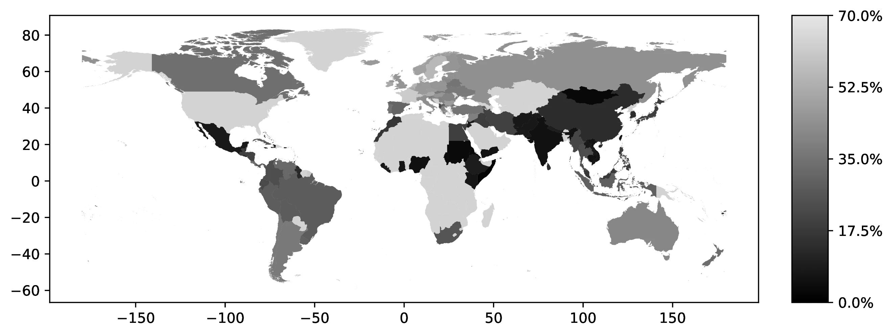
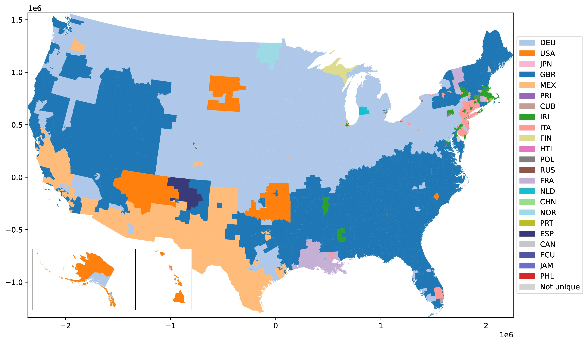
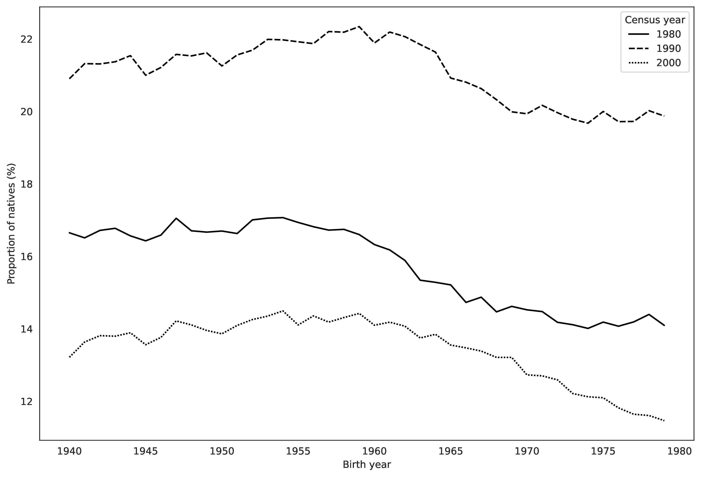
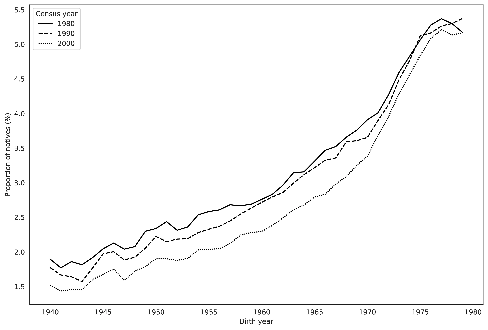
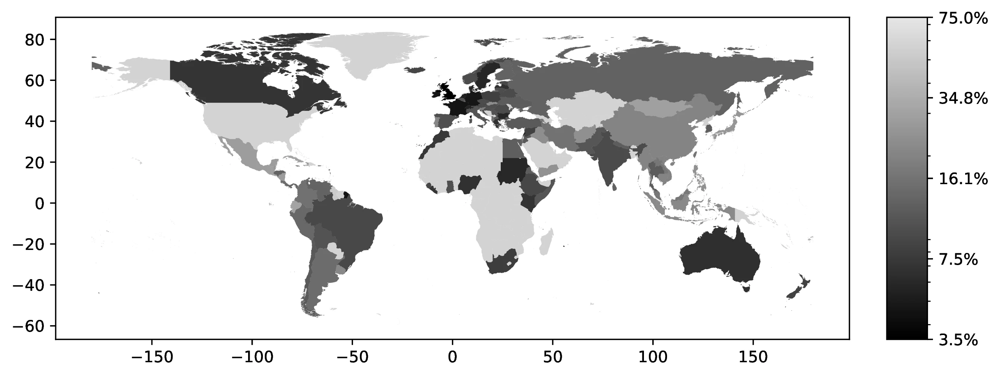
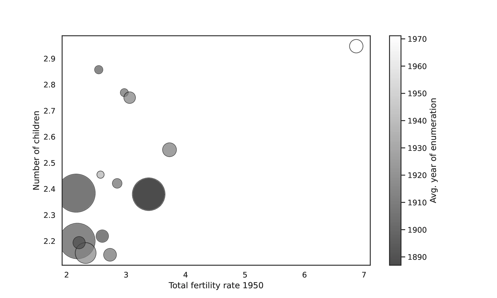
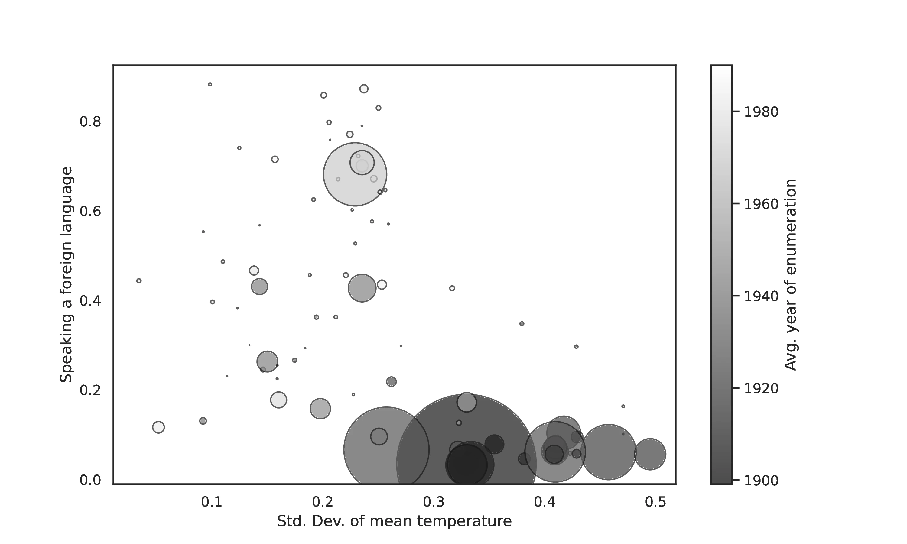
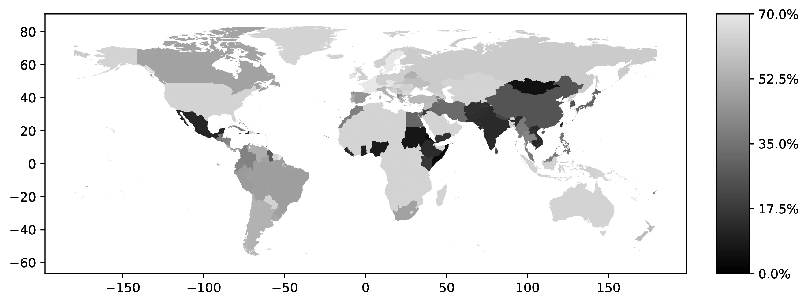
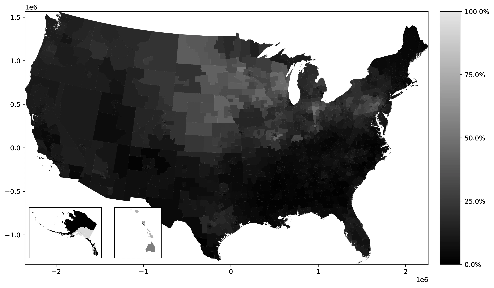
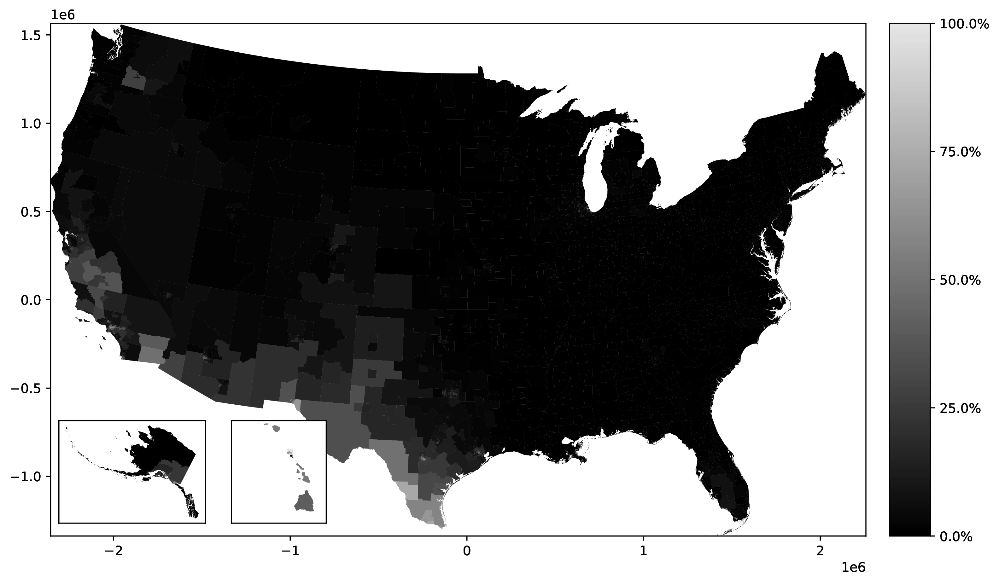

Migration and the epidemiological approach: Time and self-selection into foreign ancestries matter
![]()
The epidemiological approach in comparative development uses data on individuals of immigrant origin to study cultural persistence, the determinants of cultural norms, and the effects of genetic traits. A common assumption of this methodology is its susceptibility to attenuation bias. We challenge it by demonstrating how the increasing reliance on foreign ancestries to identify respondents’ origins can introduce confounding biases. Specifically, self-selection in reporting foreign ancestry and unobserved variation in ancestral migration timing may lead to inflated estimates. We formalize these mechanisms through a theoretical framework and illustrate their empirical significance by reassessing key findings from influential studies by Fernández and Fogli (2006) and Giuliano and Nunn (2021).
Comparative development, MigrationAncestry, CultureI., Identity choice
Acknoweldgements
The authors gratefully acknowledge the comments received from the guest editor Hillel Rapoport, by two anonymous referees, Travis A. Baseler, Martin Fernández, Jesús Fernández-Huertas Moraga, Victor Gay, David Gomtsyan, Gordon Hanson, Francesca Marchetta, Gianluca Orefice, Ömer Özak, and from participants to the 16th AFD-World Bank Conference on Migration and Development (Boston U.), the 13th Conference on Immigration to OECD Countries (Paris), the 2024 Conference on Deep-Rooted Factors in Comparative Development (Brown), the 8th Conference on Understanding Voluntary and Forced Migration (Lille), the 3rd International Workshop on Migration and Family Economics (Paris), the 23rd Journées Louis-André Gérard-Varet (Marseille), the 4th International Conference on Development Economics (Marseille), and to seminar presentations at University of Naples Parthenope, IFPRI, CERDI, and PSE; they also gratefully acknowledge the technical assistance provided by Lucas Fages as well as the support received from the Agence Nationale de la Recherche of the French government “France 2030” (grant number ANR-16-IDEX-0001); the code underlying this paper is available at: https://doi.org/10.3886/E224182V1; the usual disclaimers apply.
1 Introduction
Understanding the deep-rooted determinants of economic development is a fundamental question that has garnered considerable attention among economists. This has sparked a burgeoning literature, revealing how contemporary outcomes such as economic development, inequality, and individual behaviors are influenced by the persistent characteristics of a distant past. Furthermore, this literature has also provided abundant evidence of the persistence of cultural and genetic traits.
Isolating the long-term causal effect of such traits is a vivid challenge due to the likely emergence of numerous credible confounders. To address this, economists have extensively relied on the so-called epidemiological approach, an expression introduced by Raquel Fernández.1
This method hinges on a criterion that unambiguously assigns each individual to one ancestral origin. The literature commonly employs four main proxies, with this key choice being often subject to binding data constraints: country of birth (Antecol 2000; Luttmer and Singhal 2011), maternal or paternal country of birth (e.g., Fernández 2007; Giuliano 2007; Galor and Savitskiy 2018; Galor, Özak, and Sarid 2016, 2020; Giuliano and Nunn 2021; Ek 2024), foreign ancestry (e.g., Antecol 2000; Guiso, Sapienza, and Zingales 2006; Fernández and Fogli 2006; Algan and Cahuc 2010; Alesina et al. 2015; Galor and Özak 2016; Giavazzi, Petkov, and Schiantarelli 2019; Arbatlı et al. 2020; Giuliano and Nunn 2021; Ek 2021; Galor, Klemp, and Wainstock 2023), and language (e.g., Alesina et al. 2003; Desmet, Ortuño-Ortín, and Wacziarg 2017; Giuliano and Nunn 2021).2 Yet, none of these proxies, unequivocally captures an individual’s ancestry or identifies a single foreign origin.3 Parents might be from different countries, a languages can be spoken in several countries, and multiple ancestries can be reported. Consequently, these proxies can link an individual to diverse origins—for example, someone born in Spain might speak French at home and report an Italian ancestry. These distinctions are crucial for econometric analysis because different origins often entail different norms, cultural values, or genetic factors.
The multifaceted nature of one’s own cultural identity, the fact that migrants from all origin countries are likely to be self-selected along some cultural traits,e.g., long-term orientation and attitude towards risk, and cultural homophily, which tends to make migrants in a given destination more similar than populations at origin are (see, for instance, Antecol 2000; Alesina et al. 2015 on this), all strongly suggest that the epidemiological approach is exposed to an attenuation bias. Indeed, the widely cited review of the literature by Fernández (2011) observes that:
“It should be noted explicitly that the epidemiological approach is biased towards finding that culture does not matter. As mentioned previously, the fact that parents are only one source of cultural transmission among many and that they may have cultural attitudes that differ from the average ones in the country of ancestry implies that one is more likely to rule the cultural proxy insignificant.”
Thus, the epidemiological approach in comparative development is often presumed to suffer from attenuation bias, as suggested by the quote from Fernández (2011). This presumption, however, may be unwarranted when relying on self-reported ancestry data—an approach increasingly common in studies using US census or similar surveys.4 The initial move towards using ancestry data was motivated by concerns about first-generation immigrants, who constitute a self-selected group unrepresentative of their origin populations, potentially biasing analyses due to unobserved traits.5 However, with the exception of Galor, Özak, and Sarid (2016) and Galor, Özak, and Sarid (2020), the literature has largely overlooked that similar selection concerns—related to unobservable factors—also apply to natives of foreign ancestry. Importantly, these selection issues in ancestry data can counteract the presumed attenuation bias. Two key factors contribute to this: (i) a large portion of the native population does not report a traceable foreign ancestry, meaning their ancestry cannot be readily linked to a specific foreign country; and (ii) substantial unobserved variation exists in the time elapsed since ancestral migration among those who do report foreign ancestry.6
Regarding point (i), data from the 2000 census indicate that nearly 20% of the population reported no ancestry at all (Brittingham and Cruz 2004). Furthermore, an even larger fraction declared ancestries categorized as native (e.g., African American 8.8%, American Indian 2.8%, American 7.2%) or supranational (e.g., Hispanic 0.9%, European 0.7%), or ancestries with links to multiple current nations (e.g., Basque, Czechoslovakian, Prussian or Yugoslavian). In total, our analysis reveals that for 47.2% of the native population, a connection to a specific foreign country of origin through self-reported ancestry cannot be established. Several factors contribute to this lack of reported foreign ancestry. Natives whose ancestors came from a given foreign country might not report an ancestry in that country simply because they lack, as observed by Farley (1991), the necessary “factual knowledge” about the history of their family, or they might deliberately decide not to do so.7 A legitimate presumption is that, if we consider a group of natives whose ancestors came to the United States from a given foreign country, those choosing to report the corresponding foreign ancestry have a greater attachment to their ancestral culture than those who chose not to report that ancestry. This, in turn, implies that the individuals entering into the estimation sample are selected in a way that likely increases the chances of finding a significant effect. The intensity of self-selection into reporting a foreign ancestry might also vary across ancestral countries, and be stronger for ancestries towards which natives have, on average, a more negative attitude because of the perception of a greater cultural distance with the United States,8 but this is not a necessary condition for a threat to identification.
As far as point (ii) is concerned, the different time profiles of past migration flows to the United States from various countries imply that the time elapsed since ancestral migration varies across groups of natives reporting different foreign ancestries.9 As cultural assimilation can increase with time through horizontal interactions (Bisin and Verdier 2001), longer elapsed time may lead to greater convergence towards US cultural norms. For example, Guiso, Sapienza, and Zingales (2006) posit that differences in redistribution attitudes among natives of different ancestries may reflect varying times since ancestral migration.10 Giavazzi, Petkov, and Schiantarelli (2019) provides supporting empirical evidence across various cultural traits. Crucially, census and American Community Survey data do not capture this time dimension, potentially confounding econometric analyses.11 This unobserved heterogeneity in migration timing can lead to overestimating cultural persistence if countries with culturally distant norms have more recent migration histories to the US. Similarly, it can bias analyses of determinants of cultural traits if these determinants are correlated with migration timing —a likely scenario given the evolving origins of US immigration (Abramitzky and Boustan 2017) and the smooth geographical distribution of factors often studied in the epidemiological approach.12
To address these issues, our analysis proceeds in four interrelated stages. First, we outline the canonical epidemiological specification and common methods used to define foreign origin. Second, we develop a theoretical framework to model how self-selection in foreign ancestry reporting and variations in time since migration can bias estimates from this specification. Third, using census data (Ruggles et al. 2023), we empirically document: the extent of non-reporting of foreign ancestry; variations in ancestry reporting over time (in the 1980, 1990 and 2000 Censuses); correlates of non-reporting Mexican ancestry among people that identified as Hispanic-Mexican; and the origin-specific approximate values for time since ancestral migration for a set of 116 origin countries using historical Censuses.13 In addition, we describe and compute proxy measures of the time since ancestral migration using current Censuses. These include the share of individuals claiming an ancestry who were born in the corresponding ancestral country, i.e., first-generation migrants, the spatial concentration of ancestries, and the use of ancestral languages. We argue that such variables should decline with time since migration,14 something we validate against historical immigration data. Fourth, we illustrate the empirical relevance of the concerns we raise by revisiting findings from two influential studies in the literature: Fernández and Fogli (2006) and Giuliano and Nunn (2021). We show that the cultural persistence of fertility norms in Fernández and Fogli (2006) weakens considerably when considering fourth-generation migrants, who represent the majority of the sample. For Giuliano and Nunn (2021), we find that the estimated impact of historical climate variability on ancestral language use is particularly influenced by natives with Spanish-speaking ancestries, i.e., groups characterized by more recent migration histories. Our aim is here is to highlight the empirical relevance of the potential confounding effects of unobserved heterogeneity when using data on ancestry, and not to call into question the results of the two papers; the findings by Fernández and Fogli (2006) still hold for second and third-generation migrants, and Giuliano and Nunn (2021) analyze data from a variety of sources, which mostly do not rely on self-reported ancestry to identify one’s own origin.
This paper offers two primary contributions to the literature on comparative development. First, we provide a theoretical framework to analyze the specific identification challenges posed by using self-reported ethnic or ancestral origin in the epidemiological approach. This is crucial given the limited availability of alternative data for natives.15 Our framework demonstrates that even with origin-invariant non-reporting of ancestry and after controlling for time since migration, the very act of restricting analysis to those reporting foreign ancestry can introduce bias, increasing the likelihood of finding significant effects. Second, we empirically document substantial heterogeneity in the US native population across different self-reported ancestries. We show that our readily available proxies can be used as diagnostic tools to assess the sensitivity of results to origin countries that are outliers in terms of time since migration, helping to evaluate potential confounding influences on estimated effects.
The remainder of the paper is structured as follows: Section 2 describes the canonical equation and identification challenges related to different origin criteria; Section 3 presents our theoretical framework and derives theoretically consistent specifications to address self-selection and time-since-migration biases; Section 4 details our data sources; Section 5 presents descriptive empirical analyses of census data, documenting patterns in ancestry reporting; Section 6 outlines how we build our proxies of unobserved heterogeneities across origins and test their validity; Section 7 provides a guideline for researcher interested in addressing biases uncovered in this paper, as well as illustrative examples of our concerns’ empirical relevance; and Section 8 concludes.
2 The epidemiological approach
Consider individuals, denoted by \(i\), residing in location \(k\) within a country \(d\). Let \(o\) represents the individual’s origin, as defined subsequently. Assume cross-sectional data are collected at time \(T\). The canonical regression in the epidemiological approach can be expressed as (omitting subscripts for country and time for conciseness):16 \[ y_{iok}=\alpha w_o+\mathbb{\beta}'\mathbb{x}_o+\mathbb{\gamma}'\mathbb{x}_i [+\mathbb{\phi}'\mathbb{x}_{ok}+d_k + \lambda f(t_i)]+\epsilon_{iok} \tag{1}\]
where \(y_{iok}\) is the outcome variable, \(w_o\) is the origin-specific variable of interest, \(\mathbb{x}_o\) and \(\mathbb{x}_i\) are vectors of origin-level and individual-level control variables, respectively. The terms \(\mathbb{x}_{ok}\) and \(d_k\) represent origin-location controls and location fixed effects; \(t_i\) denotes the time since ancestral migration for individual \(i\), possibly transformed by a function \(f(t_i)\); and \(\epsilon_{iok}\) is the error term. Note that the inclusion of \(f(t_i)\), \(\mathbb{x}_{ok}\), and \(d_k\) in Equation 1 is not systematic in the literature, something our notation emphasizes.17 Crucially, the origin-level control vector, \(\mathbb{x}_o\), is intended to capture characteristics of the population in the origin country \(o\), and thus excludes variables derived from individuals of origin \(o\) residing in the destination country.
The coefficient of interest in Equation 1 is \(\alpha\), with identification predicated on the assumption that: \[ E(w_o \times \epsilon_{iok}|\mathbb{x}_o, \mathbb{x}_i, [\mathbb{x}_{ok}, d_k, f(t_i)])=0. \]
However, this assumption can be violated. For instance, bias arises if: (i) the average time since ancestral migration varies systematically across origins (and is correlated with \(w_o\)) when \(\lambda \neq 0\), or (ii) unobserved determinants of \(y_{iok}\) lead to differential self-selection by origin, and the intensity of this selection correlates with \(w_o\). The relevance of these threats hinges on the chosen criterion for assigning origin. We now consider three common criteria and their associated sample selections: country of birth, parental country of birth, and foreign ancestry.
2.1 Country of birth
This criterion, restricting the sample to first-generation immigrants, mitigates concerns related to point (i).18 However, it conversely amplifies concerns regarding point (ii). This is because immigrants from origin country \(o\) likely differ from non-migrants (“stayers”) along numerous dimensions (e.g., Antecol 2000; Alesina et al. 2015; Alesina and Giuliano 2015).19 For instance, migrants may exhibit positive self-selection for traits like long-term orientation, and negative self-selection for risk aversion. Consequently, the expected value of the error term \(\epsilon_{iok}\) in Equation 1 is likely to vary systematically with origin \(o\).
2.2 Parental country of birth
Defining origin \(o\) by parental country of birth limits the sample to natives with at least one foreign-born parent, i.e., second-generation immigrants. While this approach increases concerns about unobserved heterogeneity in \(t_i\) —the time elapsed since parental migration to country \(d\)20— it can alleviate concerns related to point (ii). Non-random selection bias may be reduced when moving from first to second-generation migrants (see Giavazzi, Petkov, and Schiantarelli 2019), especially under imperfect vertical transmission of cultural traits (Bisin and Verdier 2001). If parental country of birth data is unavailable, this origin criterion requires further restricting the sample to individuals co-residing with parents, as in Galor, Özak, and Sarid (2016) and Galor, Özak, and Sarid (2020), potentially introducing a distinct and new source of sample selection bias.
2.3 Country of foreign ancestry
Using self-reported (foreign) ancestry as the origin criterion restricts the estimation sample for Equation 1 to natives who explicitly declare a foreign ancestral origin that is valid, in the sense that it can be unambiguously connected to a foreign country. This approach intensifies concerns regarding unobserved heterogeneity in time since ancestral migration, \(t_i\), as census data lacks information on the generational distance between individual \(i\) and their immigrant ancestors.
While seemingly alleviating concerns related to point (ii), as longer times since migration might dilute initial migrant selection bias,21 this dilution may not hold for those who do report foreign ancestry who are likely more attached to their ancestral identity.
Indeed, for natives of immigrant origin, ancestry reporting reflects a choice based on perceived costs and benefits of identity (Akerlof and Kranton 2000) and parental efforts in identity transmission (Bisin and Verdier 2001).22 Consequently, individuals with weaker ties to their origin may choose to omit ancestry reports or declare “American” or “general heritage” ancestries (e.g., Hispanic) instead of their specific foreign ancestry, thus being excluded from the analysis. Negative attitudes among natives towards certain origins strongly drive self-selection into the sample, particularly among recent immigrant groups. Historically, many immigrant groups faced prejudice in the US. Consider these examples regarding Irish and Chinese immigrants from (Fasani et al. 2019):
“Just outside the US borders were ‘hordes of Wild Irishmen … the turbulent and disorderly of all the world [who come to the United States in order to] distract our tranquillity.’ (Massachusetts Representative Harrison Gray Otis, 1797). […] Chinese immigrants were ‘morally the most debased people on the face of the earth’ (Connecticut Senator Orville Platt, 1882), who ‘bring every character of vice … [and would be] injurious in every sense of the world’ (Texas Senator Samuel Bell Maxey, 1882).”
Historically, Italians also faced long-lasting negative attitudes (see, for instance, Fouka, Mazumder, and Tabellini 2021), as individuals originating from Latin American countries still experience in the United States (see, for instance, Chavez 2013). Therefore, natives of immigrant origin who do report a foreign ancestry —despite potential negative perceptions— likely possess a stronger attachment to this (potentially costly) identity compared to those who do not. Consequently, their degree of nonrandom selection bias is likely greater than that of individuals reporting ancestries favorably regarded by natives.23
As the implications of using country of foreign ancestry data remain underexplored in the existing literature, the following section develops a simplified theoretical framework. This framework aims to isolate and analyze the combined influence of self-selection in ancestry reporting and the time elapsed since ancestral migration on estimates derived from Equation 1.
3 A simple theoretical framework
To illustrate our concerns, consider two distinct foreign countries of origin, \(o \in \{A, B\}\), each characterized by different baseline values for the cultural trait of interest, \(w_o\). The two countries might be, for instance, Germany and Mexico, two of the main countries of foreign ancestry for the native population in the US, and that often represent large and shares of the various estimation samples. For simplicity, and without loss of generality, let \(w_o\) represent the average value of the outcome \(y\) in the origin country \(o\) (i.e., \(w_o = \overline{y}_o\)), and assume that \(\overline{y}_A < \overline{y}_B\). For analytical tractability, we further simplify the population of natives with ancestry from either country \(A\) or \(B\) to consist of only two generations \(j\) of immigrants: second-generation (natives with foreign-born parents) and third-generation (natives with native-born parents and foreign-born grandparents). Thus, \(j \in \{2, 3\}\). Let \(s_o \in [0, 1]\) represent the proportion of the native population with ancestors in country \(o\) that is second-generation.
Let \(y^j_{io}\) be the outcome for native individual \(i\) with ancestry from country \(o\), where \(j \in \{2, 3\}\) indicates the generation (second or third). We assume that for second-generation immigrants (\(j=2\)), the outcome is directly determined by the origin norm: \(y^2_{io} = \overline{y}_o\).24 For third-generation immigrants (\(j=3\)), we posit a probabilistic cultural transmission: with probability \(p_o\), individual \(i\) adopts the destination country norm, \(y^3_{io} = \overline{y}\); and with probability \((1-p_o)\), maintains the origin country norm, \(y^3_{io} = \overline{y}_o\).25 To capture this probabilistic adoption, define a dummy variable \(D^3_{io}\) that equals 1 if individual \(i\) (third-generation, ancestry \(o\)) adopts the destination country norm, and 0 otherwise.
Similarly, let \(F^j_{io}\) be a dummy variable equal to 1 if native individual \(i\) with ancestry in country \(o\) reports this ancestry, and 0 otherwise.26 We assume that second-generation immigrants consistently report their foreign ancestry (\(F^2_{io} = 1\)). For third-generation immigrants, let \(q_o \in [0, 1]\) denote the probability that an individual of ancestry \(o\) will report this ancestry (\(F^3_{io} = 1\)).
To illustrate the implications of our framework, let us first assume that \(q_A = q_B = 1\). This means all natives of immigrant origin, regardless of generation, report their foreign ancestry.
Consider a regression of \(y^2_{io}\) on \(w_o\) (approximated by \(\overline{y}_o\)) using only second-generation immigrant data. The estimated coefficient, \(\widehat{\alpha}^2\), will be:
\[ \widehat{\alpha}^2=\frac{\overline{y}^2_B-\overline{y}^2_A}{\overline{y}_B-\overline{y}_A}=1 \tag{2}\]
This result is derived from the assumption that second-generation immigrants fully maintain the origin country norm, i.e., \(\overline{y}^2_o = \overline{y}_o\). Therefore, the regression directly recovers the expected unit relationship when using data solely from second-generation immigrants.
Now consider a regression of \(y^3_{io}\) on \(w_o\) using only third-generation immigrant data. The estimated coefficient, \(\widehat{\alpha}^3\), will be:27
\[ \widehat{\alpha}^3=\frac{\overline{y}^3_B-\overline{y}^3_A}{\overline{y}_B-\overline{y}_A} = \frac{[p_B\overline{y}+(1-p_B)\overline{y}_B] - [p_A\overline{y}+(1-p_A)\overline{y}_A]}{\overline{y}_B-\overline{y}_A} \tag{3}\]
where \(\overline{y}^3_o \equiv p_o\overline{y}+(1-p_o)\overline{y}_o\) represents the average outcome for third-generation immigrants from country \(o\). Here, \(\widehat{\alpha}^3\) reflects a potentially attenuated relationship due to the partial convergence of third-generation immigrants towards the destination country norm.
Instead, consider pooling data from both second and third-generation immigrants without controlling for generation. The estimated coefficient, \(\widehat{\alpha}^{\text{pooled}}\), from a regression of \(y_{io}\) on \(w_o\) in this pooled sample will be a weighted average:
\[ \widehat{\alpha}^{\text{pooled}}=\frac{s_B\overline{y}^2_B+ (1-s_B)\overline{y}^3_B-[s_A\overline{y}^2_A+ (1-s_A)\overline{y}^3_A]}{\overline{y}_B-\overline{y}_A} \tag{4}\]
In the absence of self-selection in ancestry reporting (i.e., if we still assume \(q_A=q_B=1\)), \(\widehat{\alpha}^{\text{pooled}}\) simply reflects a compositional effect determined by the generational shares, \(s_A\) and \(s_B\), within each ancestry group.28
Under the plausible assumption that the destination country norm, \(\bar{y}\), lies between the origin country norms, i.e., \(\bar{y} \in [\bar{y}_A, \bar{y}_B]\)29, it follows that \(\widehat{\alpha}^3\) from Equation 3 is bounded above by \(\widehat{\alpha}^2 = 1\), meaning \(\widehat{\alpha}^3 \leq \widehat{\alpha}^2 = 1\). Similarly, \(\widehat{\alpha}^{\text{pooled}}\) from Equation 4 is bounded between \(\widehat{\alpha}^3\) and \(\widehat{\alpha}^2\), i.e., \(\widehat{\alpha}^\text{pooled} \in [\widehat{\alpha}^3, \widehat{\alpha}^2]\).
If we then consider regressions limited to third-generation immigrants who report foreign ancestry, the estimated coefficient becomes:
\[ \widehat{\alpha}^3_F=\frac{\overline{y}^3_{B,F}-\overline{y}^3_{A,F}}{\overline{y}_B-\overline{y}_A} = \frac{[p^F_B\overline{y}+(1-p^F_B)\overline{y}_B] - [p^F_A\overline{y}+(1-p^F_A)\overline{y}_A]}{\overline{y}_B-\overline{y}_A} \tag{5}\]
where \(\overline{y}^3_{o,F} \equiv p^F_o\overline{y}+(1-p^F_o)\overline{y}_o\) represents the average outcome for third-generation immigrants from country \(o\) who report foreign ancestry. From the bounds established earlier, it follows that \(\widehat{\alpha}^3_F \in [\widehat{\alpha}^3, \widehat{\alpha}^2]\).
In the extreme case where the correlation between assimilation and ancestry reporting is perfectly negative, i.e., \(\text{corr}(D^3_{io}, F^3_{io}) = -1\), then \(p^F_o = 0\). This means that all third-generation individuals who adopt the destination country norm cease reporting foreign ancestry. In this scenario, the estimated coefficient \(\widehat{\alpha}^3_F\) becomes equal to \(\widehat{\alpha}^2 = 1\), and importantly, the coefficient from a pooled regression also restricted to individuals reporting foreign ancestry, denoted \(\widehat{\alpha}^\text{pooled}_F\), also equals \(\widehat{\alpha}^2 = 1\). Thus, self-selection in foreign ancestry reporting can lead to an overestimation of cultural persistence, both when analyzing third-generation immigrants specifically and in pooled samples. This overestimation occurs because individuals who assimilate towards the destination norm are systematically excluded from the estimation sample when conditioning on reporting foreign ancestry. In the epidemiological approach, conditioning on reported ancestry is necessary, as origin-country norms and values can only be meaningfully attributed to individuals identified as having a foreign ancestry. Consequently, the upward bias we describe may counteract any inherent attenuation bias in the epidemiological methodology.
Furthermore, if an origin country’s norm closely aligns with the destination country’s norm (e.g., if \(\overline{y}_A = \overline{y}\)),30 then even without self-selection in ancestry reporting among individuals of origin \(A\), we would find that \(\widehat{\alpha}^3_F = \widehat{\alpha}^\text{pooled}_F = \widehat{\alpha}^2\). This is because for individuals of origin \(A\), the origin and destination norms are effectively identical, resulting in \(\overline{y}^3_{A,F} = \overline{y}^3_{A}\). Consequently, self-selection in foreign ancestry reporting poses a greater concern for origin countries whose norms diverge more significantly from those of the destination. In other words, if the two countries \(A\) and \(B\) are Germany and Mexico, self-selection into reporting a Mexican ancestry would be a more pressing concern.
A theoretically consistent specification, addressing the limitations discussed, would modify Equation 1 to include time since ancestral migration, \(t_i\), as follows:31
\[ y_{iok}=\alpha_1 w_o+\alpha_2 (w_o \times f(t_i)) +\mathbb{\beta}'\mathbb{x}_o+\mathbb{\gamma}'\mathbb{x}_i+ \mathbb{\phi}'\mathbb{x}_{ok}+d_k + \lambda f(t_i)+ \epsilon_{iok} \tag{6}\]
The key distinction between Equation 1 and our theoretically refined Equation 6 is the incorporation of \(f(t_i)\) both as an additive term and interacted with \(w_o\). Estimating Equation 6, however, presents data challenges. Direct measurement of \(t_i\) is rare; to our knowledge, only the GSS provides this information, unlike larger datasets such as the census, the ACS or the CPS. The previous problem can be partially mitigated with geographically aggregated controls, such as continental fixed effects, which help reduce origin-level heterogeneity. However, this approach cannot address individual-level variation in migration timing. Additionally, Equation 6 does not account for potential biases stemming from self-selection in foreign ancestry reporting. Data limitations remain a significant constraint, and the inherent sample selection must be considered when interpreting econometric results.
4 Data Sources
Our analysis uses data primarily from the US population censuses, focusing on the 5% sample from 2000 (Ruggles et al. 2023), with supplementary data from the 5% samples of the 1980 and 1990 censuses for specific analyses.32 Earlier censuses (1850-1970) are also used to validate our proxies for time since ancestral migration, constructed using 2000 census data.
4.1 US Population Censuses
US population censuses are a rich source of individual-level data, encompassing demographic and socioeconomic characteristics of all US residents, including undocumented immigrants. Along with the ACS, they are a cornerstone of epidemiological research on cultural persistence and the long-term impact of ancestry (e.g., Fernández and Fogli 2006; Giuliano and Nunn 2021; Ek 2021; Galor, Özak, and Sarid 2020; Galor, Klemp, and Wainstock 2023). The US, with its history of diverse immigration, provides an ideal setting to study these phenomena.
For identifying individual origin, US census data offers four key variables: birthplace, ancestry, language spoken at home (other than English), and parental country of birth. Birthplace is universally available in the census. Parental country of birth is limited to individuals co-residing with parents, resulting in a smaller and potentially self-selected sample. Home language is less suitable for origin identification due to endogeneity and ambiguity.33 Therefore, we primarily focus on birthplace and ancestry as our main origin indicators for the subsequent analysis, selectively utilizing the remaining variables when appropriate.
4.2 Main variables used in the analysis
Our analysis employs four key variables used in the literature to determine individual origin: respondent’s birthplace, self-reported ancestry, parental birthplace (maternal or paternal), and language (other than English) spoken at home. In the following subsections, we detail each variable and how we constructed crosswalks to standardize origin classifications across these measures.
4.2.1 Birthplace
The birthplace variable (bpld), available in censuses, identifies either the state of birth for natives or the country of birth for foreign-born individuals. It is more detailed than some aggregated birthplace codes (bpl), providing sub-regional identifiers where available. For instance, in the 2000 census, distinct codes exist for birthplaces like Aruba or Madeira, offering enhanced geographical specificity.
4.2.2 Parental Birthplace
Parental birthplace, specifically maternal and paternal, is derived by linking the respondent’s birthplace information to that of co-resident mothers and fathers within the census data. Census variables identify co-resident parents (variables momloc and poploc), allowing construction of parental birthplace for the subset of co-residing respondents.
4.2.3 Self-Reported Ancestries
The ancestry question was introduced in the 1980 census, replacing parental birthplace and mother tongue questions. It asks respondents to specify the “ancestry group with which [she] identifies.” Question wording evolved slightly from 1980 (“What is this person’s ancestry?”) to 1990 and 2000 (“What is this person’s ancestry or ethnic origin?”).34 Participation is voluntary, and respondents may choose not to report any ancestry. Census questionnaires include examples of ancestries (e.g., “Italian, Jamaican, African Am., Cambodian…”).35
Respondents could report up to two ancestries in 1990, 2000, and the ACS, recorded in variables ancestr1 and ancestr2. The Census Bureau provides no explicit ordering criteria. In 1980, up to three ancestries were recorded. When reporting three ancestries, the Census Bureau recorded them in alphabetical order in ancestr1, leaving ancestr2 empty.36 Thus, reporting a third ancestry in 1980 could alter the alphabetical order of the first two in ancestr1.37 Reported ancestries encompass native (e.g., American, African American, American Indian) and foreign origins. Foreign ancestries can specify a country (e.g., Italian), a sub-national region (e.g., Sicilian), or a supranational group (e.g., European, Hispanic).38 The “American” ancestry is uniquely treated by the Census Bureau: it is valid only if no other ancestry is reported and is otherwise discarded. Consequently, the first reported ancestry should be interpreted as the first valid ancestry.39
As Farley (1991) notes, ancestry questions are complex, relying on “factual knowledge” of family history and individual identity choices:
“The ancestry question is more complicated in that it depends to a large degree on factual knowledge about the history of one’s family, but also requires many people to make a decision about identification: Which one or two of several possible ethnicities does a person report? Undoubtedly, some individuals identify very strongly with a particular ancestry, and will do so regardless of clues on the census form or contemporary political events. Many others, however, may not identify strongly, so their answers may depend on ephemeral events.” (Farley 1991, 414).
“Ephemeral events” influencing ancestry reporting can include questionnaire context. Farley (1991) suggests that in 1980, the ancestry question’s placement after an English proficiency question might have biased responses towards “English” ancestry. Similarly, changes in example lists between 1980 and 1990 significantly altered ancestry distributions (Rosenwaike 1993). Therefore, ancestry data reflects subjective identity judgments, not merely objective factual information.
4.2.4 Language Spoken at Home
The variable language records languages other than English spoken at home by respondents aged five and older. Those speaking only English at home are coded as English. This variable offers limited coverage of indigenous languages from foreign countries.
To facilitate comparative analysis across origin measures, we developed a crosswalk linking bpld (birthplace), ancestr1 (ancestry 1), ancestr2 (ancestry 2), and language. Specifically, we mapped each reported ancestry to corresponding birthplace codes (from bpld). For example, “Belgian” and “Flemish” ancestries were linked to the bpld code for Belgium. Subsequently, for each ancestry, we associated any language that is either an official language of the mapped country or spoken by at least 20% of its population, drawing on language data from Mayer and Zignago (2011). This crosswalk allows us to identify, for example, respondents of a specific foreign ancestry who were born in their ancestral country or speak a language associated with that ancestry at home.
5 Empirical Analysis of Census Data
This section outlines the steps of our empirical analysis using US census data, focusing on how we identify individuals’ origins and document patterns of ancestry reporting.
5.1 Identifying Individual Origin
Following standard practice, we define individual origin based on the first reported ancestry only.40 We exclude “general heritage” ancestries (e.g., European, Latin American) that lack clear country links, and aggregate detailed ancestries to the country level (e.g., English, Scottish, Welsh are all associated to Great Britain; Acadian, Canadian, French Canadian to Canada).
This process allows us to identify 114 distinct foreign ancestries, predominantly European and American, but with limited African representation. In the 2000 census, approximately 52.8% of native respondents reported a usable foreign ancestry.41 The remaining 47.2% are roughly equally divided between those reporting no ancestry and those reporting non-usable native or general heritage ancestries.
Data limitations prevent origin-specific analysis of non-reporting for all 114 ancestries, as we lack ancestor birthplace data. However, an exception arises with Mexican ancestry, due to a questionnaire overlap. Census Question 5 asks about “Spanish/Hispanic/Latino” identity, including “Mexican, Mexican American, Chicano”. These categories directly correspond to our Mexican ancestry group and the comparison is meaningful because Mexicans represent the main non-European ancestry.
Analyzing the 589,358 natives identifying as “Mexican, Mexican American, Chicano” in Question 5 of the 2000 census (5% sample) reveals that only 72.7% reported a Mexican-linked first ancestry (Mexican: 60.2%, Mexican American: 12.0%, Chicano: 0.5%). Of the remainder, 10.9% reported no ancestry, 6.2% “Hispanic”, 1.6% “Spanish”, and 1.3% “American”. Thus, conservatively assuming all “Hispanic (Mexican, Mexican American, Chicano)” individuals have Mexican ancestors, over 27% chose not to report a Mexican ancestry.
Aggregating to the PUMA level reveals a negative correlation (-0.319) between the propensity not to report Mexican ancestry and the local Hispanic population share. Thus, in areas with larger Hispanic populations, non-reporting of Mexican ancestry is less frequent —indicating a contextual influence on identity reporting. Furthermore, we examined whether non-reporting of Mexican ancestry is systematically related to cultural attachment, proxied by Spanish home language use. Among “Hispanic (Mexican, Mexican American, Chicano)” natives not reporting Mexican ancestry, 44.3% speak Spanish at home, compared to 56.6% among those reporting Mexican ancestry —a 27.8% difference. This disparity, observed for a major ancestry group, suggests non-random selection in ancestry reporting, linked to cultural attachment.
5.2 Main Foreign Ancestries in 2000
In 2000, the top five first ancestries reported by natives were: German (12.3% of all natives, 22.1% of those reporting an ancestry), Great Britain (9.7% and 17.6%), Irish (7.6% and 13.6%), Italian (4.7% and 8.5%), and Mexican (3.9% and 7.0%). Together, these five ancestries account for 38.4% of all natives (69.0% among ancestry reporters). Only seven additional countries represent at least 1.0% of native ancestries. Figure 1 maps the global distribution of natives reporting each country as their first ancestry.42
Figure 2 shows the proportion of natives reporting a second ancestry, conditioned on their first ancestry.43 Countries with longer migration histories to the US, particularly European nations, exhibit a higher prevalence of reported multiple ancestries. This pattern likely reflects intermarriage across different ancestries in earlier generations.

Source: Authors’ elaboration on the 2000 Census (Ruggles et al. 2023)
Notes: We examine the percentage of individuals with a specific ancestral background who identify as having a secondary ancestry. For example, we analyze the proportion of individuals with Italian as their primary ancestry who also report having a secondary ancestry.
Figure 3 maps the most frequent ancestry among natives in each Public Use Microdata Area (PUMA),44 revealing 23 distinct ancestries as dominant across various PUMAs. As expected, the geographical distribution of these dominant ancestries closely reflects historical settlement patterns. For instance, Mexican ancestry predominates in PUMAs along the US-Mexico border (Texas, California, Arizona, New Mexico), mirroring the historical immigration and settlement of Mexicans in these border regions. Similarly, French ancestry is concentrated in Louisiana PUMAs, consistent with French colonial history in that state. Norwegian ancestry is most prevalent in northern North Dakota and Minnesota PUMAs, reflecting 19th-century Norwegian immigration to the Midwest, drawn to areas with climates similar to Norway (Obolensky, Tabellini, and Taylor 2024).45

Source: Authors’ elaboration on the 2000 Census (Ruggles et al. 2023)
Notes: For each Public Use Microdata Area (PUMA), we identify and assign the most prevalent ancestral heritage among native residents.
PUMA-level ancestry data vividly illustrates the substantial variation in time elapsed since migration across different reported ancestries —a crucial factor for epidemiological frameworks to consider. The prevalence of German ancestry, the most reported in 1990 and often tracing back their arrival for over a century, provides a stark example. In contrast to more recent immigrant ancestries, descendants of 19th-century German migrants have had generations to disperse geographically across the US. This greater dispersion is evident in the PUMA data: German ancestry shares are widely distributed across diverse regions. Conversely, more recent ancestries, like Mexican, exhibit more geographically concentrated patterns, such as near the southern border. This contrast underscores the importance of accounting for time since migration when analyzing ancestry data in epidemiological studies.
5.3 Cohort Variation in Self-Reported Ancestry
Brittingham and Cruz (2004) documents significant shifts in reported foreign ancestries between the 1990 and 2000 censuses. Notably, German ancestry, the most common, decreased from 23.3% to 15.2% of the population —an absolute drop from 57.9 to 42.8 million individuals.46 This decline may be attributed to demographic shifts, such as mortality in older German ancestry cohorts from 1990, limited German immigration, and reduced propensity for newer cohorts to report German ancestry. Indeed, cohort analysis reveals substantial census-to-census variation in German ancestry reporting among natives born in the same year.

Source: Authors’ elaboration on the 1980, 1990 and 2000 Census (Ruggles et al. 2023)
Notes: This Figure plots the share of natives born between 1940 and 1979 reporting German as a first ancestry in the 1980, 1990 and 2000 census. The restrictions on the year of birth are meant to minimize the influence of demographic events, as no individual in our analysis is aged above 60 in 2000.
Figure 4 illustrates this for natives born 1940-1979, showing German first-ancestry reporting across the 1980, 1990, and 2000 censuses. Limiting birth years to pre-1980 minimizes demographic effects, as no individual analyzed was over 60 in 2000. For each cohort, German ancestry reporting increased sharply from 1980 to 1990, then declined abruptly by 2000. While changes in multiple ancestry recording between 1980 and 1990 might explain the initial rise (see Section 4.1), they do not account for the subsequent decline. This decline may be linked to questionnaire design: German ancestry was an example in 1980 (fourth in the list) and 1990 (first in the list), but absent in 2000, and these wording changes are known to influence responses (Rosenwaike 1993).

Source: Authors’ elaboration on the 1980, 1990 and 2000 Census (Ruggles et al. 2023)
Notes: This Figure plots the share of natives born between 1940 and 1979 reporting Mexican as a first ancestry in the 1980, 1990 and 2000 census. The restrictions on the year of birth are meant to minimize the influence of demographic events, as no individual in our analysis is aged above 60 in 2000.
Figure 5 shows parallel trends for Mexican ancestry. While overall Mexican ancestry reporting increased across birth cohorts due to rising Mexican immigration throughout the 20th century, within each birth cohort, a consistent decline in Mexican ancestry reporting is evident across census years, mirroring the German pattern, though with smaller absolute magnitudes but similar relative declines. For instance, Mexican ancestry reporting among natives born in 1940 decreased from 1.9% in 1980 to 1.5% in 2000 —a proportional drop exceeding 40%.
These trends caution against directly comparing origin data across census waves without acknowledging potential inconsistencies, and emphasize the need for robustness checks when using different waves separately in epidemiological regressions. More broadly, these examples —German and Mexican, representing major European and Latin American ancestries— highlight a key point: self-reported ancestry is not a fixed, objective trait, but a dynamic, subjective identity marker that can evolve over an individual’s lifetime and be influenced by seemingly ephemeral factors like census questionnaire design. The econometric implications of this subjective and time-varying nature of ancestry reporting warrant careful consideration.
6 Proxying Unobserved Heterogeneity
This section outlines how we build our proxies capturing heterogeneity in time since ancestral migration as well as attachment to the culture of origin. We then test the validity of our proxies.
6.1 Building proxies
We describe here how we build each of the three proxies, namely the share of the (total) population of a given ancestry that is born in the ancestral country, the spatial concentration of natives of a given ancestry, and the share of natives with an ancestry in a non-English speaking country speaking the language of the ancestral country at home.
6.1.2 Spatial Concentration of Natives
We calculate a spatial concentration index, \(v^2_o\), for each ancestry using a Herfindahl-Hirschman Index (HHI) based on PUMA-level native population shares (\(s_{ok}\)). Here, \(s_{ok}\) is the proportion of natives of ancestry \(o\) residing in PUMA \(k\) relative to the total native population of ancestry \(o\). This HHI, computed at the State level for sufficient observation counts, represents the probability that two randomly selected natives of the same ancestry reside in the same state.

Source: Authors’ elaboration on the 2000 Census (Ruggles et al. 2023)
Notes: Data sources: elaboration on the 2000 Census (Ruggles et al. 2023) This Figure displays, for each country of ancestry, the Herfindahl-Hirschman of spatial concentration at the State level. It represents the proportion of natives residing in a given State declaring a first ancestry linked to that country relative to the total native population of ancestry.
Index values range widely, from 3.5% (Great Britain) to 72.5% (Anguilla),48 with an average of 17.8% and a median of 13.0%. Figure 7 shows significantly lower \(v^2_o\) values for European ancestries compared to Latin American ancestries. For instance, \(v^2_o\) is 28.2% for Mexican ancestry and 10.5% for Bolivian ancestry (the lowest among Spanish-speaking Latin American countries). Conversely, German ancestry, representative of older migration waves, exhibits a low concentration (4.8%). These origin-specific HHI variations reflect differing times since migration, with higher spatial concentration for more recent migrant groups due to stronger initial network effects on location choices.
6.2 Validating Proxies
We analyze the pattern of correlation between the three proxies, and verify their ability to provide information on the unobserved origin-specific average time elapsed since ancestry migration using information on the timing of origin-specific past migration flows to the United States.
6.2.1 Correlations and Spatial Patterns
We assessed correlations between our proxies, weighting by the number of natives per ancestry to align with individual-level econometric analyses and to minimize the influence of small ancestry groups on correlation estimates.49 Correlations are high: 0.843 between \(v^1_o\) and \(v^2_o\); 0.867 between \(v^1_o\) and \(v^3_o\); and 0.834 between \(v^2_o\) and \(v^3_o\). These strong inter-correlations reinforce the validity of our proxies for capturing unobserved heterogeneity related to ancestry.
Consistently, the ten lowest values for \(v^1_o\), \(v^2_o\), and \(v^3_o\) are predominantly associated with European countries—reflecting their longer migration histories to the US. Conversely, Latin American countries tend to exhibit among the highest values. This confirms that countries with more distant migration histories generally have lower values for all three \(v_o\) proxies: their ancestries are primarily composed of natives, exhibit greater spatial dispersion across states, and demonstrate lower rates of ancestral language use at home.
Regressing each \(v_o\) on continent dummies further underscores this continental pattern. Weighted regressions of \(v^1_o\), \(v^2_o\), and \(v^3_o\) on continental dummies yield high \(R^2\) values: 0.805, 0.698, and 0.877, respectively. These high \(R^2\)s indicate that the majority of the variability in our proxies occurs between continents, rather than within them, reinforcing the strong continental dimension of these ancestry-related heterogeneity measures.
6.2.2 Evidence from Earlier Censuses (1850-1990)
To further validate our ancestry proxies, we use historical US censuses (1850-1990) to estimate the average census year of enumeration for immigrants from each origin country. Since 1850, censuses have recorded birthplace for foreign-born individuals, providing insights into origin-specific average time since migration for natives self-reporting different ancestries in later censuses.50
However, this validation exercise has inherent limitations. Our proxies aim to capture time since ancestral migration for those reporting specific ancestries, not all descendants of immigrants from a given country. These averages can differ due to: (i) self-selection in ancestry reporting and (ii) historical return migration, which was substantial during the era of Mass Migration (Bandiera, Rasul, and Viarengo 2013), meaning that not all observed immigrants in older censuses have US-resident descendants in current data. Furthermore, differential fertility rates across ancestry groups also complicate direct historical comparisons.
Despite these caveats, we analyzed 1850-1990 census data to assess our proxies’ validity. For each origin country \(o\), we pooled foreign-born individuals across census years 1850-1990. We then computed the origin-specific average census year, \(\overline{t}_o\), using individuals aged 30-35 at survey time. This age restriction minimizes double-counting individuals across censuses51 and targets an age likely to maximize descendant presence in later generations. Note that \(\overline{t}_o\) overestimates the true average immigration year, as the immigration year itself is unobserved in most census years.52 Furthermore, our measure inherently underestimates time since migration, as no immigrant could have arrived before 1815 in our dataset. We also use the 1850 census immigrant stock per origin to gauge earlier immigration flows.
Table 6 presents \(\overline{t}_o\) and 1850 immigrant stock for the 25 largest 2000-census ancestries. For example, \(\overline{t}_{DEU}=1908\) and \(\overline{t}_{MEX}=1971\). The table also highlights timing differences within Europe: Irish immigrants are observed on average in 1887 with a large 1850 stock (984,851), while Italian immigrants appear later (average year 1930) with a much smaller 1850 stock (2,684).
Notes: The bivariate cross-country relationship between the share of people born in the origin country and the average year of enumeration.
Figure 10 visually confirms the strong positive relationship between our 2000-census ancestry proxies and the average census year of immigration, \(\overline{t}_o\). As the figure illustrates, higher values of \(\overline{t}_o\) are systematically associated with higher values of \(v^1_o\) (share born in ancestral country), \(v^2_o\) (spatial concentration), and \(v^3_o\) (ancestral language use). This consistency, observed between historical immigration patterns and our contemporary ancestry proxies, significantly strengthens our confidence in using \(v^1_o\), \(v^2_o\), and \(v^3_o\) as valid indicators of unobserved time since ancestral migration.
7 Using Origin-Specific Proxies
7.1 A Guideline
The proxies \(v^1_o\), \(v^2_o\), and \(v^3_o\) serve as simple diagnostic tools to identify ancestry groups that may exhibit distinct patterns in terms of average time since ancestral migration. If specific ancestry groups stand out as outliers on these proxies, it becomes crucial to test the sensitivity of epidemiological regression estimates, described in Equation 1, to the exclusion of these groups.
Specifically, if estimates change significantly upon sample restriction in ways consistent with expected effects based on \(w_o\) values and origin-specific proxies, then the original estimates may be confounded by unobserved heterogeneity in time since ancestral migration. Importantly, we caution against directly incorporating these proxies as controls in Equation 1. Replacing unobserved \(f(t_i)\) with \(v^1_o\), \(v^2_o\), or \(v^3_o\) would fail to capture within-ancestry heterogeneity and could introduce “bad controls”.53 For example, historical US immigration policies favored groups perceived as culturally proximate, meaning our proxies likely reflect cultural distance to the US. Similarly, higher ancestry attachment may correlate with spatial concentration (\(v^2_o\)), further confounding their use as simple controls.
We propose a three-step procedure to assess the potential exposure of epidemiological regressions to the biases described in this paper.
Step 1 - Diagnostic Analysis. Analyze country-level correlations between the treatment variable and our proposed proxies (\(v^1_o, v^2_o, v^3_o\)), which capture self-selection in ancestry reporting and unobserved heterogeneity in time since migration. We recommend presenting descriptive statistics and graphical analyses to understand data structure and potential biases.
Step 2 - Address Influential Observations. Evaluate regression robustness by excluding observations identified as outliers in Step 1 or by including fixed effects to down-weight their influence. This helps isolate the impact of potentially biased observations on main results.
Step 3 - Add Relevant Controls. Consider adding controls for self-selection and time-since-migration heterogeneity, such as the proxies discussed in this paper. If Step 1 and 2 diagnostics suggest minimal bias, adding further proxies may be unnecessary and could inadvertently introduce “bad controls”. Transparently discuss this tradeoff.
7.2 Illustrative Examples
To illustrate this procedure, we revisit two influential papers: Fernández and Fogli (2006) and Giuliano and Nunn (2021). Our choice of Fernández and Fogli (2006) is based on: (i) its seminal contribution to the epidemiological approach (605 Google Scholar citations as of Febr. 18, 2025); (ii) its clear identification strategy, linking native fertility to ancestral country fertility (1950 TFR), which helps explain time-since-migration bias; (iii) its use of GSS data, enabling generational distinctions (second, third and at least fourth generation immigrants) to explore unobserved heterogeneity; and (iv) our successful reconstruction of their sample and replication of findings despite data unavailability.54
Our choice of Giuliano and Nunn (2021) is based on: (i) its influential contribution to the epidemiological approach (461 Google Scholar citations as of Febr. 18, 2025); (ii) its analysis of the effect of historical climate variability on ancestral language use in the US, illustrating concerns about time-since-migration correlation; and (iii) the availability of replication data.
7.2.1 Fernández and Fogli (2006)
Fernández and Fogli (2006) analyze data from nine GSS waves (1977-1987) to estimate the impact of ancestral fertility norms on fertility of US natives. Their sample comprises 1,145 married native women aged 29-50 reporting foreign ancestries from 14 countries.55 They estimate the following core equation:
\[ y_{iokt}=\alpha \overline{y}_{o}+[\mathbb{\gamma}'\mathbb{x}_{i}]+d_k+d_t+\epsilon_{iokt} \tag{7}\]
Here, \(y_{iokt}\) is the number of children for woman \(i\) of ancestry \(o\) in region \(k\) at time \(t\); \(\overline{y}_{o}\) is the Total Fertility Rate (TFR) in origin country \(o\) in 1950; \(\mathbb{x}_{i}\) includes controls for siblings, a quadratic polynomial in age, education dummies (high school, some college, college), and parental education.56 Region fixed effects (\(d_k\)) control for geographical location (9 US regions), and \(d_t\) are survey year fixed effects.
Crucially, their sample includes all generational cohorts of natives reporting foreign ancestry, without controlling for time since migration. The authors find a positive and significant effect of \(\overline{y}_{o}\) on \(y_{iokt}\), interpreting this as evidence that:
“[I]t is not only personal experience … that matters to a woman’s fertility, but also that her culture … plays a role. … even after controlling for various characteristics and family background of a woman, both her own personal experience and her culture play a role in influencing her fertility.” (Fernández and Fogli 2006, 561)
Step 1 - Diagnostic. Fernández and Fogli (2006) acknowledge data limitations in distinguishing immigrant generations, but GSS data does allow this.57 GSS data indicates parental nativity and counts foreign-born grandparents.58 Following Giavazzi, Petkov, and Schiantarelli (2019), we categorize natives of foreign ancestry as: second-generation (at least one foreign-born parent), third-generation (native parents, at least two foreign-born grandparents), and fourth-generation or more (native parents, at most one foreign-born grandparent).
Applying these established generational definitions to the estimation sample reveals a notable generational distribution: second-generation immigrants constitute just 8.6%, third-generation 22.5%, while a substantial 64.8% are of (at least)fourth-generation immigrants; a small fraction (4.2%) possess missing generational information. Two key observations emerge from these figures. First, a precise generational status, directly linked to either parents or grandparents, can only be definitively assigned to a minority —merely 31.1%— of the sample, specifically those of the second or third generations. The generational depth for the primarily native fourth generation and beyond, representing nearly two-thirds of the sample, remains less precisely defined within the GSS framework. Second, and perhaps more critically, we observe marked generational heterogeneity across different ancestries themselves (detailed in Table A.1 in the online Appendix). Strikingly, for the majority —nine out of fourteen— of ancestral origins, fourth-generation immigrants and beyond constitute the largest group. In contrast, third-generation immigrants are most numerous for four ancestries (Finnish, Italian, Russian, and Swedish), and second-generation immigrants are most prevalent only in the case of Mexican ancestry. This uneven generational distribution immediately raises a diagnostic flag: individuals of Mexican origin emerge as potentially influential observations, possessing characteristics that might introduce bias into the overall estimation.

Source: Authors’ elaboration on data from the General Social Survey, on the origin-specific data on the TFR in Fernández and Fogli (2006), and on the 1850 to 1990 census (Ruggles et al. 2023)
Notes: This bubble plot displays the unconditional relationship between origin-country total fertility rate and the number of children. The size of each bubble represents the population size of the ancestry group, while the color indicates the average year of enumeration in a US Census. Each bubble represents a different ancestry group.
This diagnostic concern is further reinforced by considering our independent measure of time since ancestral migration, \(\overline{t}_o\).59 Indeed, visual inspection of Figure 11 provides compelling corroboration. Individuals of Mexican origin are starkly revealed as outliers within this visual representation, characterized by a more recent migration history (reflected in a higher \(\overline{t}_o\)), coupled with both higher Total Fertility Rates in their ancestral origin (1950 TFR, \(\overline{y}_o\)), and higher observed fertility (\(y_{iokt}\)). This conspicuous clustering and outlier status strongly suggests a potential for upward bias, wherein the relationship discerned within the original analysis may be, at least in part, spuriously driven by the unobserved generational heterogeneity confounded with these particularly influential observations of Mexican origin.
Step 2 - Address Influential Observations. To assess the influence of Mexican-origin individuals, identified as potential outliers, we test the sensitivity of the original core findings by systematically excluding them from their sample. Table 1 replicates the original specifications reported in Table 3a of Fernández and Fogli (2006), serving as a baseline. In contrast, Table 2 presents estimates from six key specifications —those including the 1950 TFR as a regressor— after removing Mexican-ancestry observations.
| Dependant variable is Children | ||||||||||
|---|---|---|---|---|---|---|---|---|---|---|
| (1) | (2) | (3) | (4) | (5) | (6) | (7) | (8) | (9) | ||
| TFR 1950 | 0.166*** | 0.101*** | 0.117*** | 0.097*** | 0.135*** | 0.118** | ||||
| (0.025) | (0.026) | (0.016) | (0.020) | (0.036) | (0.042) | |||||
| SIBS | 0.093*** | 0.086*** | 0.044*** | 0.039** | 0.045** | 0.039* | ||||
| (0.012) | (0.014) | (0.012) | (0.014) | (0.017) | (0.019) | |||||
| Age | 0.281** | 0.304*** | 0.299*** | 0.345*** | 0.364*** | 0.359*** | ||||
| (0.098) | (0.095) | (0.095) | (0.079) | (0.083) | (0.083) | |||||
| Age sq | -0.003* | -0.003** | -0.003** | -0.003*** | -0.004*** | -0.004*** | ||||
| (0.001) | (0.001) | (0.001) | (0.001) | (0.001) | (0.001) | |||||
| High School | -0.814*** | -0.764*** | -0.738*** | -0.629*** | -0.574*** | -0.564*** | ||||
| (0.128) | (0.122) | (0.124) | (0.152) | (0.170) | (0.162) | |||||
| Some College | -0.921*** | -0.865*** | -0.822*** | -0.619*** | -0.553** | -0.532** | ||||
| (0.063) | (0.072) | (0.055) | (0.181) | (0.194) | (0.178) | |||||
| College | -1.362*** | -1.292*** | -1.250*** | -1.143*** | -1.071*** | -1.057*** | ||||
| (0.100) | (0.106) | (0.108) | (0.128) | (0.147) | (0.134) | |||||
| Mother’s education | -0.060** | -0.063*** | -0.056** | |||||||
| (0.024) | (0.019) | (0.021) | ||||||||
| Father’s education | 0.027** | 0.027** | 0.028** | |||||||
| (0.010) | (0.010) | (0.010) | ||||||||
| Obs. | 1145 | 1144 | 1144 | 1144 | 1143 | 1143 | 922 | 921 | 921 | |
| Adj. \(R^2\) | 0.037 | 0.060 | 0.062 | 0.203 | 0.206 | 0.208 | 0.223 | 0.225 | 0.229 | |
| Region FE | Yes | Yes | Yes | Yes | Yes | Yes | Yes | Yes | Yes | |
| Year FE | Yes | Yes | Yes | Yes | Yes | Yes | Yes | Yes | Yes | |
Notes: This table replicates Table 3a in Fernández and Fogli (2006). It reports the results of estimating Equation 7 on individual-level data from the GSS (1977-1987). An observation is a married women of foreign ancestry, born in the US and between 29 and 50 years of age. The dependent variable is the number of children born to a woman. TFR 1950 if the total fertility rate in the woman’s country of ancestry in 1950. In-sample countries of ancestry are Canada, Denmark, UK, Finland, France, Germany, Ireland, Italy, Mexico, Netherlands, Norway, Russia, Spain, and Sweden. SIBS is the number of siblings a women has. The individual controls include: age, age squared, and a set of dummy variables to capture the level of education (below high school [omitted], high school degree (“High School”), some college (“Some College”), and at least a college degree (“College”). The parental controls include mother’s education and father’s education in number of years. Estimations also include region of residence fixed effects, as well as year of survey fixed effects. Standard errors are clustered at country of ancestry level.
| Dependant variable is Children | |||||||
|---|---|---|---|---|---|---|---|
| (1) | (2) | (3) | (4) | (5) | (6) | ||
| TFR 1950 | 0.126** | 0.074 | 0.101*** | 0.085*** | 0.194*** | 0.181*** | |
| (0.056) | (0.045) | (0.020) | (0.020) | (0.040) | (0.040) | ||
| SIBS | 0.089*** | 0.041** | 0.039* | ||||
| (0.015) | (0.015) | (0.020) | |||||
| Age | 0.266** | 0.285*** | 0.352*** | 0.368*** | |||
| (0.094) | (0.091) | (0.091) | (0.093) | ||||
| Age sq | -0.002* | -0.003** | -0.004** | -0.004*** | |||
| (0.001) | (0.001) | (0.001) | (0.001) | ||||
| High School | -0.788*** | -0.717*** | -0.627*** | -0.574*** | |||
| (0.107) | (0.113) | (0.112) | (0.117) | ||||
| Some College | -0.864*** | -0.769*** | -0.577*** | -0.502** | |||
| (0.075) | (0.067) | (0.174) | (0.167) | ||||
| College | -1.299*** | -1.188*** | -1.073*** | -0.996*** | |||
| (0.119) | (0.128) | (0.125) | (0.123) | ||||
| Mother’s education | -0.073** | -0.069** | |||||
| (0.025) | (0.023) | ||||||
| Father’s education | 0.029** | 0.029*** | |||||
| (0.010) | (0.009) | ||||||
| Obs. | 1062 | 1061 | 1061 | 1060 | 867 | 866 | |
| Adj. \(R^2\) | 0.030 | 0.055 | 0.191 | 0.196 | 0.220 | 0.226 | |
| Region FE | Yes | Yes | Yes | Yes | Yes | Yes | |
| Year FE | Yes | Yes | Yes | Yes | Yes | Yes | |
Notes: This table replicates Table 3a in Fernández and Fogli (2006) (excluding specifications without “TFR 1950”), dropping women of Mexican ancestry.
The impact of this sample restriction is notable. The estimated coefficient on origin-country TFR in 1950 demonstrably weakens. In Col. (1), for example, the coefficient decreases from a robustly significant 0.166 (s.e. 0.025) to a less precisely estimated 0.135 (s.e. 0.050). This seemingly minor sample alteration —dropping just 38 observations, a mere 3.3% of the original sample— precipitates a substantial 18.7% reduction in the estimated coefficient’s magnitude. Furthermore, the standard error doubles.
Step 3 - Add Relevant Controls. Table 3 expands the baseline specification in Equation 7 by incorporating generational controls. We introduce dummies for immigrant generation (third and fourth, with second-generation as the reference) and interact these with origin-country TFR (\(\overline{y}_o\)).60 In these specifications, the baseline TFR coefficient (\(\alpha\)) now reflects the effect for second-generation immigrants. The results reveal a significant TFR effect on fertility specifically for second and third-generation women (comprising 31.1% of the sample in the first data column), but no significant effect for fourth-generation immigrants.
| Dependant variable is Children | |||||||
|---|---|---|---|---|---|---|---|
| (1) | (2) | (3) | (4) | (5) | (6) | ||
| TFR 1950 | 0.193*** | 0.143*** | 0.215*** | 0.198*** | 0.199** | 0.184** | |
| (0.037) | (0.043) | (0.045) | (0.046) | (0.069) | (0.072) | ||
| SIBS | 0.079*** | 0.033** | 0.031 | ||||
| (0.015) | (0.014) | (0.019) | |||||
| TFR 1950 \(\times\) 3rd gen. migrant | 0.033 | 0.035 | -0.013 | -0.010 | 0.017 | 0.017 | |
| (0.047) | (0.043) | (0.035) | (0.036) | (0.049) | (0.049) | ||
| TFR 1950 \(\times\) 4th gen. migrant | -0.143** | -0.154** | -0.210** | -0.210** | -0.125 | -0.121 | |
| (0.056) | (0.056) | (0.087) | (0.085) | (0.083) | (0.082) | ||
| TFR 1950 + TFR 1950 × 3rd gen. mig. | 0.225*** | 0.178** | 0.202*** | 0.188*** | 0.215** | 0.201* | |
| (0.058) | (0.060) | (0.054) | (0.054) | (0.097) | (0.098) | ||
| TFR 1950 + TFR 1950 × 4th gen. mig. | 0.050 | -0.012 | 0.005 | -0.012 | 0.074* | 0.063 | |
| (0.041) | (0.040) | (0.051) | (0.053) | (0.036) | (0.039) | ||
| Mean outcome 2nd gen. mig. | 2.633 | 2.633 | 2.598 | 2.598 | 2.537 | 2.537 | |
| Mean outcome 3rd gen. mig. | 2.265 | 2.265 | 2.265 | 2.265 | 2.265 | 2.265 | |
| Mean outcome 4th gen. mig. | 2.307 | 2.306 | 2.307 | 2.306 | 2.296 | 2.295 | |
| Obs. | 1097 | 1096 | 1096 | 1095 | 893 | 892 | |
| Adj. \(R^2\) | 0.036 | 0.057 | 0.194 | 0.198 | 0.215 | 0.220 | |
| Individual controls | No | No | Yes | Yes | Yes | Yes | |
| Parental controls | No | No | No | No | Yes | Yes | |
| Region FE | Yes | Yes | Yes | Yes | Yes | Yes | |
| Year FE | Yes | Yes | Yes | Yes | Yes | Yes | |
Notes: This table explores heterogeneities by generation of migration in Table 3a in Fernández and Fogli (2006). We work on Fernández and Fogli (2006) initial sample defined in Table 1, while keeping women for who we are able to retrieve information about their generation of migration. “3rd gen. migrant” is a dummy indicating a woman being a third-generation migrant, “4th gen. migrant” is a dummy indicating a women being (at least) a fourth-generation migrant. These two last definitions are based on Giavazzi et al. (2019). These two dummies are also separately included in the regressions. The dependent variable is the number of children born to a woman (we report in the second part of the table the mean dependent variable of each generation of migrants in our regression samples). TFR 1950 if the total fertility rate in the woman’s country of ancestry in 1950. SIBS is the number of siblings a women has. We report in the second part of the table the estimates and standard errors of the total effect of TFR 1950 for third-generation and fourth-generation migrants. The individual controls include: age, age squared, and a set of dummy variables to capture the level of education (below high school [omitted], high school degree (“High School”), some college (“Some College”), and at least a college degree (“College”). The parental controls include mother’s education and father’s education in number of years. Estimations also include region of residence fixed effects, as well as year of survey fixed effects. Standard errors are clustered at country of ancestry level.
This generational pattern aligns with our theoretical framework. However, alternative interpretations warrant consideration. First, lower TFR variability in the fourth-generation sample, potentially reducing statistical power; Mexico’s high TFR is less represented in this group. Second, 1950 TFR may be a less accurate cultural norm proxy for longer-descent generations. Third, the composition of the estimation sample across ancestral countries varies significantly, implying that the coefficient may reflect differences across countries rather than over time elapsed since ancestral migration. Fourth, attenuation bias, inherent to the epidemiological approach and amplified by mixed ancestries more common among native women who are fourth-generation immigrants, could also explain the non-significant finding.61
Our theoretical framework suggests interpreting the core TFR coefficient as capturing the effect primarily within the subsample who reports foreign ancestry. GSS data reveals that a substantial fraction of natives with foreign-born ancestors do not report foreign ancestry. If, as our Mexican ancestry analysis in Section 5.1 suggests, these non-reporting individuals are less culturally attached to their origin, their exclusion could lead to an upward bias in the estimated TFR effect in the baseline specification.
7.2.2 Giuliano and Nunn (2021)
Giuliano and Nunn (2021) use 2000 Census data to analyze the influence of historical climatic variability in the ancestral country on natives’ likelihood of speaking a non-English language at home—a proxy for tradition. Their main hypothesis is that higher climatic variability reduces tradition’s importance, thus decreasing ancestral language use. Their sample includes 3,343,097 US natives with foreign ancestries from 84 non-English-official-language countries. They estimate: \[ y_{iok}=\alpha w_{o}+\mathbb{\beta}'\mathbb{x}_o+ \mathbb{\gamma}'\mathbb{x}_{i}+\phi x_{ok}+d_k+\epsilon_{iok} \] {#eq_gn}
Here, \(y_{iok}\) is a dummy for speaking a non-English language at home, for native \(i\) of ancestry \(o\) in US metro area \(k\). The key variable, \(w_{o}\), measures historical climatic variability in origin country \(o\). Origin-country controls (\(\mathbb{x}_o\)) include historical distance from equator, historical development/political complexity measures, linguistic distance to English, and the logarithm of GPD in 2000. Metro-area control (\(x_{ok}\)) is the fraction of metro area \(k\)’s population born in country \(o\). Individual controls (\(\mathbb{x}_{i}\)) include age (a quadratic polynomial), sex, marital status, education/labor-force-status fixed effects, the logarithm of income, and urban/rural indicator.62
In their benchmark specification, i.e., the first data column in Table 5 in Giuliano and Nunn (2021), the estimated \(\alpha\) is -0.447. A one standard deviation increase in climatic variability reduces predicted foreign language speaking by 3.2 percentage points —a notable effect given the 12% baseline rate of speaking a foreign language at home.
Step 1 - Diagnostic. A significant portion of the original sample —11.6%— reports ancestry from American countries, with 21 out of 84 ancestral origins being American-based. Critically, all but Canada among these 21 American countries share a recent migration history to the US. This recency, reflected in our \(v^1_o\) proxy (share born in ancestral country), might inflate ancestral language use. Moreover, 19 of these 21 American ancestries are Spanish-speaking.
Notably, Spanish-ancestry natives in the sample exhibit dramatically higher rates of non-English use at home: 65.4% versus only 6.0% for the rest of the sample —over ten times greater.63 Because Spanish is a shared language among multiple origins, controlling for co-ethnic presence at the metro-area may be insufficient to capture the incentive to speak Spanish. For instance, someone of Spanish ancestry might speak Spanish not because Spaniards are present but because individuals from Equator are in the same metro-area.
Thus, the estimated effect of climatic variability may confounded by: (i) shorter time since migration for Latin American Spanish-speaking ancestries, and (ii) inadequate controls for the general prevalence and incentives to speak Spanish in the US. Both factors likely inflate observed ancestral language use for Spanish-speaking groups, and both are correlated with (not counteracted by) higher historical climatic variability.

Source: Authors’ elaboration on the replication files of Giuliano and Nunn (2021), and on data from the 1850 to 1990 censuses (Ruggles et al. 2023)
Notes: This bubble plot displays the unconditional relationship between cross-generational climatic instability and speaking a foreign language at home. The size of each bubble represents the population size of the ancestry group, while the color indicates the average year of enumeration in a US Census. Each bubble represents a different ancestry group.
Figure 12 visually confirms, Spanish-speaking ancestry countries indeed appear as outliers in the original sample, characterized by both higher climatic variability and, crucially, more recent average year of enumeration, reinforcing concerns about potential confounding upward bias in the estimated climatic variability effect.
Step 2 - Address Influential Observations. To gauge the impact of Spanish-speaking ancestries, potentially influential due to their recency, we re-estimate the original benchmark specification in Table 4, excluding the 362,050 observations from these origins (10.8% of the sample). The estimated coefficient \(\alpha\) on climatic variability, initially -0.447 (s.e. 0.168), decreases to -0.202 (s.e. 0.062). While still statistically significant, despite the modest sample reduction, the magnitude of the climatic variability effect is substantially reduced —by 54.8%. A one standard deviation increase in climatic variability now implies a 1.4 percentage point reduction in predicted foreign language speaking, down from 3.2 percentage points in the original estimate.
| Sample: All countries, GN sample | |||||
| (1) | (2) | (3) | (4) | (5) | |
| Climatic variability | -0.202*** | -0.201*** | -0.202*** | -0.194*** | -0.187*** |
| (0.062) | (0.065) | (0.062) | (0.064) | (0.068) | |
| Frac. of same anc. | 0.002 | 0.015 | |||
| (0.017) | (0.020) | ||||
| Av. year of enum. | 0.001 | 0.001 | |||
| (0.001) | (0.001) | ||||
| \(R^{2}\) | 0.069 | 0.069 | 0.069 | 0.069 | 0.069 |
| Av. year of enum. defined | Yes | Yes | Yes | Yes | Yes |
| Metarea fixed effect | Yes | Yes | Yes | Yes | Yes |
| Individual controls | Yes | Yes | Yes | Yes | Yes |
| Mean of dep. var. | 0.06 | 0.06 | 0.06 | 0.06 | 0.06 |
| Number of countries | 65 | 65 | 64 | 64 | 64 |
| Number of Metareas | 298 | 298 | 298 | 298 | 298 |
| Observations | 2,981,047 | 2,981,047 | 2,981,023 | 2,981,023 | 2,981,023 |
Notes: This table replicates results from Table 5 of Giuliano and Nunn (2021), adding the fraction of metropolitan area population of the same ancestry and the average year of enumeration in a US Census as controls.
This sensitivity analysis does not invalidate the article’s core finding, nor do we claim our restricted estimate as the “true” effect. Instead, it highlights the disproportionate influence of Spanish-speaking ancestries in shaping the estimated coefficient in the baseline specification. Spanish, spoken at home by 28.1 million individuals out of 47.0 speaking a foreign language at home in 2000 (Shin and Bruno 2003), holds a unique position reflecting large recent Latin American immigration waves. This analysis empirically underscores our concern: unobserved heterogeneity across ancestry groups, particularly in time since migration and Spanish language incentives unique to the US context, may lead to overestimation of cultural persistence in epidemiological regressions, motivating the addition of adequate control variables.
Step 3 - Add Relevant Controls. Table 5 presents original estimates (Table 5 in Giuliano and Nunn 2021) alongside those incorporating our time-since-migration proxy, \(\overline{t}_o\) (average year of enumeration). Due to data limitations (\(\overline{t}_o\) unavailable for one ancestry), Col. (3) first focuses on the reduced 83-country sample; the climatic variability coefficient remains largely unchanged. Col. (4) then adds \(\overline{t}_o\) as a control, reducing the main coefficient by 42.6%, to -0.257 (s.e. 0.154), while \(\overline{t}_o\) is positively and significantly associated with foreign language speaking, as expected: more recent migration histories (higher \(\overline{t}_o\)) correlate with greater language persistence.
| Sample: All countries, GN sample | |||||
| (1) | (2) | (3) | (4) | (5) | |
| Climatic variability | -0.447*** | -0.387** | -0.447*** | -0.257* | -0.165 |
| (0.168) | (0.165) | (0.168) | (0.154) | (0.139) | |
| Frac. of same anc. | 0.152*** | 0.213*** | |||
| (0.057) | (0.041) | ||||
| Av. year of enum. | 0.007*** | 0.007*** | |||
| (0.002) | (0.002) | ||||
| \(R^{2}\) | 0.294 | 0.296 | 0.294 | 0.324 | 0.328 |
| Av. year of enum. defined | Yes | Yes | Yes | Yes | Yes |
| Metarea fixed effect | Yes | Yes | Yes | Yes | Yes |
| Individual controls | Yes | Yes | Yes | Yes | Yes |
| Mean of dep. var. | 0.12 | 0.12 | 0.12 | 0.12 | 0.12 |
| Number of countries | 84 | 84 | 83 | 83 | 83 |
| Number of Metareas | 298 | 298 | 298 | 298 | 298 |
| Observations | 3,343,097 | 3,343,097 | 3,343,073 | 3,343,073 | 3,343,073 |
Notes: This table replicates results from Table 5 of Giuliano and Nunn (2021), adding the fraction of metropolitan area population of the same ancestry and the average year of enumeration in a US Census as controls. The unit of observation is a person born in the U.S with ancestry from a non-English speaking country. The dependent variable is an indicator that equals one if the person speaks a foreign language at home. All specifications include the following control variables: the fraction of metropolitan area population of the same ancestry, the fraction of metropolitan area population who is first-generation immigrants of the same ancestry, historical distance from the equator, historical economic development, historical political complexity, the GDP in the country of origin measured at the time of the survey, the linguistic distance between the country of origin and the U.S, age, age squared, sex, marital status, education level, labor force status, natural log of annual income, a rural/urban indicator variable. and metarea fixed effects. Standard errors clustered at the ancestry-country level are in parentheses.
Col. (2) explores ancestry reporting self-selection by adding the percentage of individuals in the metro-area that identify with the respondent’s ancestry. This reduces the climatic variability coefficient from -0.447 to -0.387, consistent with self-selection bias inflating estimates of cultural persistence due to non-random ancestry reporting. The ancestry population control itself is positively and significantly associated with foreign language speaking, indicating localized network effects.64 Beyond its possible role in controlling for non-random selection in reporting an ancestry, this variable may also capture language use incentives, similar to one of the original controls. This could explain why our control is not negative —the expected sign for non-random selection—: a large community increases the value of one’s ancestral language.
Importantly, our theoretical framework suggests the baseline original estimates reflect the effect of climate variability on the selected subsample of natives who choose to report foreign ancestry. If, as our Mexican ancestry analysis suggests, these ancestry-reporting natives are systematically more attached to their origin culture, the baseline estimate may still exhibit upward bias, even with added controls, highlighting the fundamental challenge of selection on unobservables in this methodological approach.
8 Concluding Remarks
A substantial body of influential research in comparative development increasingly utilizes natives’ first self-reported foreign ancestry in US data to define origin. This methodological choice largely reflects data constraints, as the post-1980 Census and ACS lack alternative origin identifiers.
This paper argues and empirically demonstrates that relying on foreign ancestry introduces specific identification threats to the epidemiological approach, challenging the widespread assumption of inherent attenuation bias. Contrary to this presumption, estimating canonical specifications specifically on ancestry-reporting natives may amplify, rather than attenuate, biases. The primary threats stem from: (i) the significant proportion of natives not reporting foreign ancestry and (ii) unobserved heterogeneity in time since ancestral migration.
We therefore recommend that researchers rigorously assess the sensitivity of their findings to the inclusion of ancestries with recent US migration histories —even if these constitute a small fraction of the overall sample. Furthermore, we emphasize that even with such robustness checks, interpretations must acknowledge the inherently selected nature of ancestry-based samples. Estimates are necessarily conditional on a population subgroup —those who choose to report foreign ancestry— potentially magnifying the likelihood of detecting significant cultural or genetic persistence due to the likely stronger cultural attachment within this selected sample. Current data limitations unfortunately preclude fully overcoming this inherent sample selection bias.
| Country | Native-born % | Average year of enumeration | Residents in 1850 |
|---|---|---|---|
| Germany | 22.06% | 1908 | 596,181 |
| United Kingdom | 17.56% | 1915 | 387,710 |
| Ireland | 13.65% | 1887 | 984,851 |
| Italy | 8.50% | 1930 | 2,684 |
| Mexico | 7.03% | 1971 | 15,038 |
| Poland | 4.10% | 1930 | 3,208 |
| France | 3.43% | 1923 | 61,433 |
| Norway | 2.39% | 1911 | 12,749 |
| Netherlands | 1.81% | 1928 | 11,662 |
| Sweden | 1.74% | 1911 | 3,440 |
| Canada | 1.47% | 1926 | 135,300 |
| Russia | 1.05% | 1922 | 716 |
| Puerto Rico | 0.95% | 1974 | - |
| Spain | 0.91% | 1945 | 2,634 |
| Denmark | 0.61% | 1915 | 2,080 |
| Hungary | 0.56% | 1925 | 100 |
| Greece | 0.51% | 1945 | 92 |
| Portugal | 0.49% | 1950 | 1,848 |
| Philippines | 0.49% | 1977 | - |
| China | 0.46% | 1945 | 671 |
| Japan | 0.45% | 1954 | - |
| Switzerland | 0.38% | 1912 | 14,546 |
| Slovakia | 0.34% | 1920 | - |
| Finland | 0.33% | 1922 | - |
| Ukraine | 0.30% | 1941 | - |
Notes: This table reports, for each of the 25 main foreign countries of ancestry for the native population in the 2000 census, the average year \(\overline{t}_o\) in which the individuals aged 30 to 35 born in each foreign country \(o\) were observed in the data (1850 to 1990 census), and the (total) stock of individuals born in country \(c\) in the 1850 census.
Appendices

Source: Authors’ elaboration on the 2000 Census (Ruggles et al. 2023)
Notes: For each ancestry, we compute the share of natives who also report a second ancestry, e.g., we compute the share of natives with Italian first or second ancestry that also report another ancestry.

Source: Authors’ elaboration on the 2000 Census (Ruggles et al. 2023)
Notes: This figure present the percentage of native-born population that identify with the German ancestry as first ancestry. The sample is composed of individuals born in the USA that report at least one ancestry.

Source: Authors’ elaboration on the 2000 Census (Ruggles et al. 2023)
Notes: This figure present the percentage of native-born population that identify with the Mexican ancestry as first ancestry. The sample is composed of individuals born in the USA that report at least one ancestry.
Source: Authors’ elaboration on the 2000 Census (Ruggles et al. 2023)
Notes: For each country, we assign a value representing the proportion of individuals who live with at least one parent born in an ancestral country that matches their first or second reported ancestry, among those declaring a first ancestry linked to that country.
References
Footnotes
“The essence of what I call the epidemiological approach is the attempt to identify the effect of culture through the variation in economic outcomes of individuals who share the same economic and institutional environment, but whose social beliefs are potentially different.” (Fernández 2011).↩︎
To appropriately link these proxies to outcome variables, researchers often need to account for major past population movements, such as those related to the Columbian Exchange; for instance, Giuliano and Nunn (2018) and Giuliano and Nunn (2021) rely on information on ethnic homelands from the Ethnographic Atlas (Murdock 1967), languages from Ethnologue and gridded data on the distribution of the population to aggregate data specific to each ethnic homeland at the country level, while Galor, Klemp, and Wainstock (2023) use data from Putterman and Weil (2010).↩︎
For example, in the case of repeated migration across different generations, the country of birth of an individual is not necessarily informative about his or her own ancestry; consider, for instance, someone born in Argentina from parents who migrated out of Germany after WWII, and who then moved to the US; this individual would be classified as Argentinian by birth, yet the cultural background could be primarily German.↩︎
The shift towards ancestry data is often driven by data availability: information on paternal and maternal birthplaces is no longer collected in censuses since 1980 nor in surveys like the American Community Survey (ACS) or the Current Population Survey (CPS) except for the subset of respondents co-residing with their own parents, or for the March Supplement of the CPS.↩︎
For instance, Alesina and Giuliano (2015) argue that second-generation immigrants form “a more appropriate sample than first-generation immigrants because issues of disruption and selection due to migration are more attenuated.” (pp. 903-4).↩︎
As Ek (2021) notes, census data limitations in tracking immigration history beyond the first generation mean that “people whose ancestors arrived 20 or 200 years ago are treated identically.” (p. 23).↩︎
Related to this, Duncan and Trejo (2011), Duncan and Trejo (2017), F. Antman, Duncan, and Trejo (2016) and F. M. Antman, Duncan, and Trejo (2023) provide evidence of the substantial incidence of what they describe as “ethnic attrition", i.e., the propensity of individuals living in the United States who are first to third-generation immigrants from Latin American or Asian countries not to report that they are Hispanics or Asians when answering to questions related to race or ethnicity; ethnic attrition increases with the time elapsed since ancestral migration, it greatly varies across origin countries, and across individuals, e.g., higher-educated individuals with a Mexican ancestry are significantly less likely to identify themselves as Hispanics.↩︎
As the data do not provide any objective information on the origin of one’s own ancestors, e.g., the countries of birth of the grandparents or of the great-grandparents, providing evidence on the origin-specific incidence of not reporting a given ancestry is unfeasible; Fulford, Petkov, and Schiantarelli (2020) provide an aggregate measure of the ancestral countries of origin for the population of each county in the United States; their approach cannot be deployed at the individual-level.↩︎
This temporal heterogeneity is intertwined with point (i), as the persistence of foreign ancestry reporting across generations varies by origin; for example, third-generation descendants of Irish immigrants in the US might be less likely to still report and Irish ancestry compared to third-generation descendants of Greek immigrants, due to differing patterns of assimilation and cultural retention across these groups.↩︎
As Guiso, Sapienza, and Zingales (2006) argue, “Americans with British, North European or German ancestors derive from earlier immigrants; hence, more generations were raised in the United States and forged by its culture, absorbing the belief that success is mostly determined by individual actions, which makes government intervention highly undesirable” (p. 41).↩︎
To our knowledge, only a few studies, notably Algan and Cahuc (2010), Alesina et al. (2015), and Giavazzi, Petkov, and Schiantarelli (2019) address this by using data from the General Social Survey (GSS), which includes both self-reported ancestry and information on the number of parents and grandparents of the respondent that were foreign-born, which allows differentiating between native individuals of different migrant generations, i.e., second, third and (at least) fourth-generation migrants.↩︎
Conley and Kelly (2024) have recently demonstrated that spatial trends and spatial autocorrelation in the data can lead to a substantial underestimation of the standard errors, and thus to an ensuing tendency to unduly reject the null hypothesis of no effect in the literature on cultural persistence.↩︎
Mexican is the only ancestry that allows such exercise due to the conceptual overlap between two questions in the Census. The first is meant to elicit Hispanic origins while the second concerns one own’s ancestral identity. Of the 116 origin countries, only 114 are foreign and, thus, useful in our analysis. The remaining two are the US and Puerto Rico.↩︎
With respect to spatial concentration, this can be due, for instance, to the fact that the importance of migrant networks (see, for instance Patel and Vella 2013) declines over time, because the relevance of the local labor demand conditions that shaped the initial spatial distribution of the immigrants fades away, or to the fact that natives of immigrant descent move away from more expensive locations where their foreign-born ancestors tended to concentrate (Albert and Monras 2022).↩︎
In contrast to Giavazzi, Petkov, and Schiantarelli (2019), we specifically explore the implications of self-reported nature of foreign ancestry.↩︎
For clarity and brevity, we omit subscripts denoting the specific country of destination (\(d\)) and the data collection time (\(T\)) as these are held constant.↩︎
For example, Giuliano and Nunn (2021) and Arbatlı et al. (2020) include location fixed effects \(d_k\), with Giuliano and Nunn (2021) also incorporating origin-location controls \(\mathbb{x}_{ok}\); however, individual time since ancestral migration \(t_i\) is generally not accounted for.↩︎
These concerns can be further lessened by including years since migration in the vector \(\mathbb{x}_i\) in Equation 1.↩︎
See, for example, Jaeger et al. (2010) and Beck Knudsen (2022) for empirical evidence of migrant selection on cultural traits.↩︎
For example, a survey might include an 80-year-old born in the US whose parents migrated 50 years prior, and a young individual born to recently arrived parents; the difference in time since parental migration can thus be substantial and close to a century.↩︎
Indeed, as \(t_i\) increases, horizontal cultural transmission within country \(d\) becomes more influential than vertical transmission of ancestral culture from origin \(o\).↩︎
F. M. Antman and Duncan (2023) present a similar framework for analyzing identity choice among Native Americans in the United States.↩︎
Duncan and Trejo (2011) and Duncan and Trejo (2017) show how “ethnic attrition” varies across origin countries.↩︎
This simplification is made to isolate the effects of heterogeneity in time since ancestral migration and self-selection in ancestry reporting by initially abstracting from direct migrant selection effects.↩︎
A zero-mean error term could be added to \(y^2_{io}\) and \(y^3_{io}\) to incorporate individual-level unobserved heterogeneity, but is omitted here for simplicity.↩︎
For simplicity, we consider a binary choice: reporting the actual ancestry or reporting no ancestry. In survey data, individuals may misreport ancestry, which our model does not account for. However, reporting a supranational or USA ancestry is treated as equivalent to not reporting any foreign ancestry, as these responses typically lead to exclusion from estimation samples.↩︎
If the probability of adopting the destination norm is uniform across origins, i.e., \(p_A = p_B = p\), then \(\widehat{\alpha}^3 = (1-p) \widehat{\alpha}^2 = 1-p\).↩︎
Specifically, if the second-generation shares are equal across origins (\(s_A = s_B = s\)), then \(\widehat{\alpha}^{\text{pooled}}\) is a simple weighted average of the generation-specific coefficients: \(\widehat{\alpha}^{\text{pooled}} = s\widehat{\alpha}^2 + (1-s)\widehat{\alpha}^3\).↩︎
This assumption seems reasonable for the US context. The initial US population comprised diverse groups migrants (e.g., British, Irish, German). Subsequent immigration likely shifted societal norms to a point intermediate between those of earlier settlers and later arrivals.↩︎
For many cultural traits, US norms were shaped by early European migrants. Thus, cultural distance between the US and countries like the UK, Germany, or Ireland may be minimal.↩︎
We thank an anonymous referee for suggesting this specification.↩︎
While other datasets, like the March Supplement of the CPS and include parental country of birth, their smaller sample sizes limit their utility for constructing reliable origin-specific variables, which are crucial for our analysis. The ACS includes similar variables to the census.↩︎
Home language is endogenous to migration and does not uniquely identify origin countries (e.g., Spanish speakers can originate from various countries). Census data on mother tongue is available only until 1970.↩︎
See questionnaire text at https://usa.ipums.org/usa-action/variables/ANCESTR1#questionnaire_text_section.↩︎
The example list has changed over time, influencing ancestry distributions (see below).↩︎
See comparability details at https://usa.ipums.org/usa-action/variables/ANCESTR1#comparability_section.↩︎
For instance, when an individual reported only “German” and “English” ancestry, the coding placed “German” —reflecting the primary identification— into
ancestr1and English inancestr2. However, upon reporting a third ancestry, like “French”, this potential preference signal vanished:ancestr1was overwritten with the alphabetized string “English-French-German”, whileancestr2became void.↩︎These supranational ancestries are termed “general heritages” by the Census Bureau.↩︎
For instance, reporting “American” and “German” ancestries leads to “German” being code in
ancestr1while “American” is discarded.↩︎Using the second reported ancestry for individuals whose first ancestry is non-informative (native or general heritage) is empirically inconsequential; few such individuals have a usable second ancestry.↩︎
The proportion of native respondents used in prior studies is not consistently reported, precluding direct comparisons.↩︎
Figure A.1 in the online Appendix reports the share of individuals who report each foreign country as either their first or second ancestry; as, with the only exception of the “American” ancestry, ancestries are no longer mutually exclusive, the sum of shares across countries exceeds 100%; Figures A.2 and A.3 in the online Appendix provide logarithmically scaled versions of Figure 1 and A.1 for better visualization of less prevalent ancestries.↩︎
Figure A.4 in the online Appendix expands this by showing the proportion reporting another ancestry, regardless of whether we consider their first or second reported ancestry as the conditioning origin.↩︎
For this mapping, “United States”, “American Indian”, “Nuevo Mexicano”, and “Hawaiian” ancestries are categorized as “United States”.↩︎
Figures A.5 and A.6 in the online Appendix illustrate the PUMA-level distribution of German and Mexican ancestry prevalence, even when not the dominant ancestry, further detailing the geographic concentration of these two significant ancestry groups.↩︎
The difference with previously discussed figures is due to our focus on native population, along with our exclusion of native or general heritage first ancestries.↩︎
Figure A.7 in the online Appendix confirms this: children, who co-reside with their parents, with ancestries linked to long-term migration patterns tend to have parents not born in the ancestral country, whereas those with more recent ancestries often have at least one foreign-born parent; The strong correlation (0.843) of \(v^1_o\) with this intergenerational measure further validates its use as a time-since-migration proxy.↩︎
The high value for Anguilla is largely due to the very small number of natives reporting that ancestry (95 in the 5% sample).↩︎
Unweighted correlations, relevant for ancestry-level analyses, yield similar results.↩︎
See https://usa.ipums.org/usa-action/variables/bpl#availability_section (last accessed on June 18, 2024).↩︎
Older censuses are full count.↩︎
Immigration year is recorded only 1900-1930 and since 1970; missing in other census years (see https://usa.ipums.org/usa-action/variables/YRIMMIG#availability_section, last accessed June 18, 2024).↩︎
We thank an anonymous referee for highlighting this point.↩︎
To our knowledge, replication data are not available online; we did not request access to data as we successfully replicated original findings using original data sources.↩︎
They exclude 6 former socialist economies and 8 countries with very small GSS sample sizes.↩︎
Parental education controls, while included, substantially reduce sample size (from 1145 to 921) and introduce potential selection biases. GSS parental education data depends on co-residence patterns at age 16, leading to non-random missingness and potential bias related to family structure and fertility outcomes. For instance, paternal education may take the value of a step-father or any co-residing male relative for women whose father was not present. Women in that category have more children (195 women, 2.48 children compared to 2.32) and recorded paternal education —corresponding to the co-residing male relative when fathers are missing— is also lower (61 women, 9.79 years compared to 10.54). Clearly, the addition of paternal education generates a non-random selection with respect to unobserved determinants of fertility.↩︎
The authors write: “unfortunately we cannot distinguish second-generation Americans from those who have been in the US for longer” (p. 554)“, but the necessary information is available in the currently available version of the dataset from the waves of the GSS used by Fernández and Fogli (2006).↩︎
GSS data indicates whether parents are native/foreign-born, and counts foreign-born grandparents, but does not list their birth countries.↩︎
To reiterate, individual-level generational status is derived from GSS data, while the country-level measure \(\overline{t}_o\) is constructed from the analysis of historical census data spanning 1850-1990.↩︎
This table revisits specifications with 1950 TFR (Table 3a in Fernández and Fogli (2006)). Table A.4 in the Appendix confirms that the original specification yields similar estimates when restricted to the generationally-defined subsample (96% of original sample).↩︎
See Fernández (2011) and Ek (2021). Appendix Table A.5 shows qualitatively similar results using \(\overline{t}_o\) (in-sample terciles of country of origin’s average year of enumeration) as an alternative time-since-migration measure, both as a control and interacted with TFR. Specifications with parental education controls (columns 5-6) are not emphasized due to their inherent selection biases.↩︎
Bertoli et al. (2024) note discrepancies between the textual descriptions and actual specifications, including English-official-language countries in the sample and “Not in MSA” observations treated as a separate metro area. Paola Giuliano and Nathan Nunn describe these as “imprecisions and omissions” in a corrigendum (Giuliano and Nunn 2024); we do not address these inconsistencies in this exercise.↩︎
This figure includes people reporting their ancestry in Spain.↩︎
This control captures within-city ancestry population variation beyond metro-area fixed effects, complementing the original controls for metropolitan area.↩︎
Reuse
Citation
@online{bertoli2025,
author = {Bertoli, Simone and Clerc, Melchior and Loper, Jordan and
Roca Fernández, Èric},
title = {Migration and the Epidemiological Approach: {Time} and
Self-Selection into Foreign Ancestries Matter},
volume = {176},
date = {2025-04-16},
doi = {10.1016/j.jdeveco.2025.103505},
langid = {en},
abstract = {The epidemiological approach in comparative development
uses data on individuals of immigrant origin to study cultural
persistence, the determinants of cultural norms, and the effects of
genetic traits. A common assumption of this methodology is its
susceptibility to attenuation bias. We challenge it by demonstrating
how the increasing reliance on foreign ancestries to identify
respondents’ origins can introduce confounding biases. Specifically,
self-selection in reporting foreign ancestry and unobserved
variation in ancestral migration timing may lead to inflated
estimates. We formalize these mechanisms through a theoretical
framework and illustrate their empirical significance by reassessing
key findings from influential studies by @fernandezandfogli and
@giuliano2021understanding.}
}